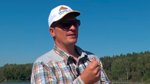
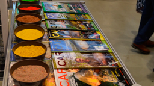

БЛОГИ
25.08.15
Дмитрий Салапин

Если держать крючок пальцами, то совершенно точно никакого эффекта не получить, поэтому пришлось честно ставить крючок острием сначала на ноготь, затем на мягкую часть пальца. Смертельный номер...
подробнее
01.03.15
Дмитрий Салапин

Вот и прошла весенняя выставка "Охота и Рыболовство на Руси 2015"
Было много новых и интересных знакомств, а так же было приятно видеть наших давних друзей. С нескрываемой радостью стоит отметить...
подробнее
Было много новых и интересных знакомств, а так же было приятно видеть наших давних друзей. С нескрываемой радостью стоит отметить...

Монолеска на фидере - 1
25.08.15
-
 Охота и Рыболовство на Руси25.08.15
Охота и Рыболовство на Руси25.08.15 -
 Монолеска на фидере часть 125.08.15
Монолеска на фидере часть 125.08.15
- August 2015 (1)
- June 2015 (1)
- May 2015 (2)
- March 2015 (3)
- February 2015 (3)
- January 2015 (3)
- December 2014 (1)
- November 2014 (1)
- September 2014 (2)
- August 2014 (3)
- July 2014 (4)
- June 2014 (1)
- April 2014 (1)
- August 2013 (1)
- July 2013 (1)
- June 2013 (2)
- April 2013 (1)
- January 2013 (1)
- November 2012 (1)
- September 2012 (1)
- August 2012 (1)
- March 2012 (1)
- February 2012 (1)
- October 2010 (1)